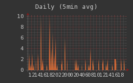

GrowthForecastは様々な値をWebAPI経由でグラフ化できるWebツールです。シンプルなAPIでリアルタイムにグラフを作成、更新でき、Webインターフェイスからグラフの表示をカスタマイズしたり、複数のメトリクスを重ね合わせたグラフを作成できます
$ crontab -l */5 * * * * curl -F number=`mysql -BN -e 'select count(*) from member' game` http://example.com/api/socialgame/member/register 2>&1 | logger -t post_gf -p local0.info
cronで定期的にGrowthForecastにPOSTするだけで、設定なしでグラフが作れます
RRDToolが依存するライブラリを導入します。以下のライブラリをyum、apt、homebrew等OSのパッケージマネージャを利用してインストールします
$ sudo yum groupinstall "Development Tools" $ sudo yum install pkgconfig glib2-devel gettext libxml2-devel pango-devel cairo-devel
$ sudo apt-get build-dep rrdtool
$ cpanm -n GrowthForecast
バージョンはCPANにて確認してください。インストールは依存モジュールの数が多いので時間がかかります
ここまでの手順でインストールは完了です。GrowthForecast の起動は「growthforecast.pl」を実行します
data-dir オプションにグラフデータを保存するディレクトリを指定して起動すると、port 5125 でWebサーバが起動するので、ブラウザで確認できます
$ growthforecast.pl --data-dir /home/user/growthforecast
| オプション名 | 説明 |
|---|---|
| port | バインドするTCPポート。デフォルトは5125 |
| host | バインドするIPアドレス。デフォルトは0.0.0.0 |
| front-proxy | リバースプロキシーを利用している場合、リバースプロキシーのIPアドレスもしくはCIDRで指定する。複数指定可 |
| allow-from | アクセス元IPアドレスの指定。指定しないと全てのリモートホストからアクセス可能 |
| disable-1min-metrics | 1分毎にグラフを更新する機能の停止 |
| with-mysql | グラフ情報を保存するDBに標準のSQLiteではなくMySQLを使う。dbi:mysql:[dbname];hostname=[hostname] の形式で指定 |
| h または help | ヘルプの出力 |
--with-mysql オプションを指定しMySQLを使う場合次の権限が必要となります。
mysql> GRANT CREATE, ALTER, DELETE, INSERT, UPDATE, SELECT \\
ON growthforecast.* TO 'www'\@'localhost' IDENTIFIED BY foobar;
ユーザ名とパスワードは環境変数で指定します
$ MYSQL_USER=www MYSQL_PASSWORD=foobar growthforecast.pl \\
--data-dir /home/user/growthforecast \\
--with-mysql dbi:mysql:growthforecast;hostname=localhost
グラフの作成・データ更新を行うには以下のURLに対してPOSTメソッドにてリクエストを行います
http://example.com/api/:service_name/:section_name/:graph_name
POSTする際のURL中の各名前は右にまとめました
各項目名にはUTF-8であればマルチバイト文字列が使えます
| 例中の名前 | 役割 | 具体例を , 区切りで |
|---|---|---|
| :service_name | グラフを取りたいサービスの名前 | blog, photo, place, socialgame |
| :section_name | そのサービスの中での、グラフを取る対象が属してる機能やシステム名 | entry, user, spot, items |
| :graph_name | 具体的に何のグラフか | total_entry, kakin_user, muryo_user |
もしソーシャルゲームの登録ユーザ数をグラフにするのであれば
http://example.com/api/socialgame/member/register
に対して POST します。
また、 POST する時には以下のパラメータをつけます。
| パラメータ | 説明 | 必須/オプション |
|---|---|---|
| number | グラフに与える数値 | 必須 |
| mode | 数値のアップデート方法。count or modified or gauge。 count: 登録済みの数値を number の値で加算 modified: 前回と異なる数値の時だけ上書き更新 gauge: number の数値で常に上書き デフォルトは gauge |
オプション |
| color | グラフの色。#FFFFFF 形式で指定 | オプション/新規グラフで指定なしの場合自動生成 |
PerlのLWPモジュールを利用したグラフの登録・更新サンプル
my $ua = LWP::UserAgent->new;
$ua->post('http://example.com/api/socialgame/member/register',{
number => 10,
color => '#333399'
});
curlを使った場合
$ curl -F number=10 http://example.com/api/socialgame/member/register
GrowthForecastはRound Robbin Databaseおよびグラフ描画のツールとしてRRDtoolを利用しています。
APIのエンドポイントに送信されたデータはRDMBSに一旦保存されます。Workerが定期的に動作し、RDBMSからデータを読み出し、RRDファイルを更新しています。その歳、GrowthForecastのworkerは、現在の値に加えて、一つ前との差分をsubtractデータとして格納しています。
subtractデータをグラフのソースとして利用することで、データの変化量を可視化することができます
グラフのURIに対していくつかパラメータを与えるとグラフの描画をカスタマイズすることができます
グラフのURI http://example.com/graph/:service_name/:section_name/:graph_name 複合グラフのURI http://example.com/graph/:pattern
パラメータを変更する事で↓こんなグラフも作れます

http://example.com/graph/service/section/graph?t=d&gmode=gauge&border=0&legend=0&width=200&background_color=333333&canvas_color=333333&font_color=CCCCCC&axis_color=666666
| パラメータ | 説明 |
|---|---|
| t | グラフの範囲。y(年間)、m(月間)、w(週間)、3d(3日間)、s3d(3日間・1分更新)、d(一日)、sd(一日・1分更新)、8h(8時間)、s8h(8時間・1分更新)、4h(4時間)、s4h(4時間・1分更新)、h(1時間)、sh(1時間・1分更新)、n(半日)、sn(半日・1分更新)、c(任意)、sc(任意・1分更新) |
| from | 「t」が「c」または「sc」の場合、描画する開始日付。「2011/12/08 12:10:00」の形式で指定 |
| to | 「t」が「c」または「sc」の場合、描画する終了日付。「2011/12/08 12:10:00」の形式で指定 |
| gmode | 値そのままの普通グラフ「gauge」か差分グラフ「subtract」の選択。デフォルトは「gauge」 |
| width | 横幅。実際には凡例などを含むので指定したサイズより大きくなる |
| height | 縦幅。実際には凡例などを含むので指定したサイズより大きくなる |
| graphonly | グラフ部分しか描画しないモード。デフォルト「0」 |
| logarithmic | 対数グラフ。デフォルト「0」 |
| xgrid | X軸の設定。フォーマットはrrdtoolのドキュメント参照のこと |
| ygrid | Y軸の設定。フォーマットはrrdtoolのドキュメント参照のこと |
| background_color | 背景色。FFFFFF または FFFFFF00 で指定。最後の2文字はアルファチャンネル |
| canvas_color | グラフ部分背景色。FFFFFF または FFFFFF00 で指定 |
| font_color | 文字色。FFFFFF または FFFFFF00 で指定 |
| frame_color | 凡例の色を囲っている部分。FFFFFF または FFFFFF00 で指定 |
| axis_color | グラフ部分の枠線。FFFFFF または FFFFFF00 で指定 |
| shadea_color | 左上、上の枠線。FFFFFF または FFFFFF00 で指定 |
| shadeb_color | 右下、下の枠線。FFFFFF または FFFFFF00 で指定 |
| border | 枠線の太さ。「0」も可能。デフォルト「3」 |
| legend | 凡例の有無。デフォルト「1」 |
| sumup | 凡例に合計値を含むかどうか。デフォルト「0」 |
グラフデータの凡例部分をJSON形式でエクスポートできます
グラフのサマリーURI http://example.com/summary/:service_name/:section_name/:graph_name 複合グラフのサマリーURI http://example.com/summary/:pattern
グラフデータをJSON形式でエクスポートできます
グラフのURI http://example.com/xport/:service_name/:section_name/:graph_name 複合グラフのURI http://example.com/xport/:pattern
| パラメータ | 説明 | |
|---|---|---|
| t | グラフの範囲。y(年間)、m(月間)、w(週間)、3d(3日間)、s3d(3日間・1分更新)、d(一日)、sd(一日・1分更新)、8h(8時間)、s8h(8時間・1分更新)、4h(4時間)、s4h(4時間・1分更新)、h(1時間)、sh(1時間・1分更新)、n(半日)、sn(半日・1分更新)、c(任意)、sc(任意・1分更新) | |
| from | 「t」が「c」または「sc」の場合、描画する開始日付。「2011/12/08 12:10:00」の形式で指定 | |
| to | 「t」が「c」または「sc」の場合、描画する終了日付。「2011/12/08 12:10:00」の形式で指定 | |
| gmode | 値をそのまま描画する普通グラフか差分グラフの選択、「gauge」または「subtract」。デフォルトは「gauge」 | 値そのままの普通グラフ「gauge」か差分グラフ「subtract」の選択。デフォルトは「gauge」 |
| width | rowの最大個数 |
https://github.com/tagomoris/fluent-plugin-growthforecast
Fluentd plugin to output numbers(metrics) to 'GrowthForecast', metrics drawing tool over HTTP.
https://github.com/tagomoris/rb-growthforecast
Client library and command to operate GrowthForecast
https://github.com/sonots/growthforecast-client
growthforecast-client is a ruby client library for GrowthForecast API where GrowthForecast is a visualization graph tool.
https://metacpan.org/pod/Net::GrowthForecast
A client library for awesome visualization tool GrowthForecast